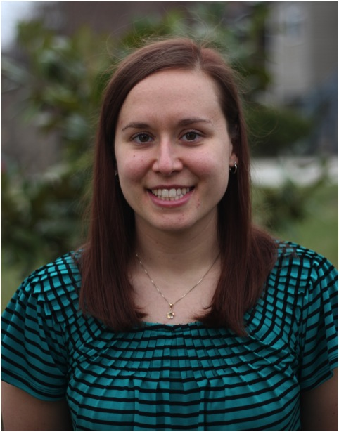

|  | Department of Electrical and Computer Engineering kfischl1@jhu.edu Barton 400 3400 N. Charles Street Baltimore, MD 21211 CV | Google Scholar | LinkedIn |
My research is focused in the field of neuromorphic engineering, a field that uses the architecture and function of the brain to inspire computer hardware and algorithms to more closely resemble that of the brain in hopes of achieving lower power and more efficient solutions. Within this field, I focus specifically on two research efforts: neural modeling to increase our understanding of the processes being performed by the social brain, and neuromorphic hardware systems to map our findings to innovative hardware solutions.
M.S.E., Electrical and Computer Engineering, Johns Hopkins University, June 2016
B.S.E. Electrical Engineering, Princeton University, June 2011
• Fischl, K. D., K. Fair, Wei-Tsai, J. Sampson and A. G. Andreou. “Spike propgation path planning on the IBM TrueNorth Neurosynaptic System.” Electronics Letters (2017). • Fischl, Kate D., et al. ”Neuromorphic self-driving robot with retinomorphic vision and spike-based processing/closed-loop control.“ Information Sciences and Systems (CISS), 2017 51st Annual Conference on. IEEE, 2017. • Ballesta, Sébastien, Clayton P. Mosher, Jeno Szep, Kate D. Fischl, and Katalin M. Gothard. ”Social determinants of eyeblinks in adult male macaques.“ Scientific Reports 6 (2016). • Andreou, Andreas G., Andrew A. Dykman, Kate D. Fischl, Guillaume Garreau, Daniel R. Mendat, Garrick Orchard, Andrew S. Cassidy et al. ”Real-time sensory information processing using the TrueNorth neurosynaptic system.“ In Circuits and Systems (ISCAS), 2016 IEEE International Symposium on, pp. 2911-2911. IEEE, 2016. • Williamson, J R ; Dumas, A ; Hess, A R ; Patel, T ; Telfer, B A ; Fischl, K ; Butler, M J, “Detecting Gait Asymmetry with Wearable Accelerometers”, MIT Lincoln Laboratory, Lexington, MA, Rep. PSM-3, 18 Mar 2015. • Jerome J. Braun ; Marianne A. DeAngelus ; Kate D. Fischl ; Austin R. Hess ; Danelle C. Shah; Building animats: neurobiomimetic approach for cognitive systems. Proc. SPIE 9121, Multisensor, Multisource Information Fusion: Architectures, Algorithms, and Applications 2014, 91210M (May 22, 2014). • Hughes, T.B., Willimason, J.R., Hess, A.R., Young, W.T., Dumas, A., Fischl, K. D., and B.D. Telfer. Solider Projection Benchmark Evaluation (SPBE) Physiological Data Collection and Analysis. Rep. no. 1174. Lexington: MIT Lincoln Laboratory, 2013. Print. • Williamson, James R.; Fischl, Kate; Dumas, Andrew; Hess, Austin; Hughes, Tadd; Buller, Mark J., ”Individualized detection of ambulatory distress in the field using wearable sensors," Body Sensor Networks (BSN), 2013 IEEE International Conference on, 6-9 May 2013. • Fischl K. “A Smart Health News Update Application.” Princeton University Senior Independent Project. January 2011.
• Lacirignola, Joseph J.; Vian, Trina Rae; Aubin Jr., David F.; Quatieri, Thomas F.; Fischl, Kate D.; Collins, Paula P.; Smalt, Christopher J.; Gatewood, Paul D.; Malyska, Nicolas; Maurer, David C., Methods and Apparatus For Recording Impulsive Sounds. Patent Application No. 20150162047. June 2015.
• “Path Planning on the TrueNorth Neurosynaptic System”. Kate Fischl, Kaitlin Fair, Wei-Yu Tsai, Jack Sampson, Andreas G. Andreou. Conference talk presented at: IEEE International Symposium on Circuits & Systems, Baltimore, MD, May 31, 2017. • “Neuromorphic Self-Driving Robot Platform”. Kate Fischl. Presented as a subsection of “Cognitive Computing Architecture for Machine Learning, Data Center Processing and Internet of Things”. Conference tutorial presented at: IEEE International Symposium on Circuits & Systems, Baltimore, MD, May 28, 2017. • “Women in ECE & CS Mentoring Dinner”. Moderated panel discussion on personal experiences as women within ECE & CS at varying career stages. Attended by 90+ faculty and students. Johns Hopkins University, December 5, 2016. • “Open Body Area Network (OBAN): An Open Architecture Prototype for a tactical body sensor network”. Anthony L, Lacirignola J, Aguilar C, Aubin D, Biddle J, Brigada D, Merfeld M, Fischl K, Maurer D, Telfer B, Palmer J, Buller M, Mullen S, Tharion W, Hoyt R. Poster Presented at: Body Sensor Networks (BSN) 2013 IEEE International Conference, Cambridge, MA, May 6-9, 2013. • “Individualized Detection of Ambulatory Distress in the Field using Wearable Sensors”. Williamson J, Fischl K, Dumas A, Hess A, Hughes T, Buller M. Poster Session Presented at: Body Sensor Networks (BSN) 2013 IEEE International Conference, Cambridge, MA, May 6-9, 2013. • “Comparison of Histone Protein Locating Algorithms”. Fischl, K. Poster presented at: MERIT-BIEN NSF Fair, University of Maryland, College Park, MD, August 6, 2010.
STEM Mentor, Western High School, Baltimore, MD Spring 2017 • Designed and orchestrated a wearable electronics after-school workshop to teach students the skills needed to solder, program, and assemble an Arduino-based light-up necklace.
Teaching Assistant, Johns Hopkins University, Baltimore, MD Fall 2015 • Facilitated laboratory section for a course on VHSIC Hardware Description Language (VHDL) in which students are required to complete ten different projects, including implementing a finite state machine, frequency-shift keying, phase locked loop, and tone detection, among others.
Undergraduate Teaching Assistant, Princeton University, Princeton, NJ Spring 2011 • Facilitated laboratory section of the electrical engineering design course in which students designed and built an autonomous camera-driven model car.
Architected and Implemented an Operating System, Harvard University Fall 2012 • Designed and implemented a functional operating system that performs memory management, spawns and kills processes, separates user and supervisor space, and employs interrupt priorities. • View final presentation at: https:community.freescale.comvideos1340
Created Smart Health News Update Application, Princeton University Spring 2011 • Programmed an application that provides a user with the most relevant and current health news updates based upon the interests indicated in a user profile.
Designed/Created Autonomous Camera-Driven Model Car, Princeton University, Spring 2010 • Integrated microprocessors, communications, control and circuitry to create a model car, which followed a black line around a course at a constant speed.